/math-1ba8aaab47179b3d3e24b0ccea9f4e30.png "x_i") ) を長さNのデータとすると、そのDFTは次式で与えられるデータ (
) を長さNのデータとすると、そのDFTは次式で与えられるデータ (/math-f67871cd00ac973d0e2b80db93f3bcd3.png "F_n") ) となります。
) となります。
離散フーリエ変換(DFT)は、時間領域の信号を周波数領域に変換する処理です。() を長さNのデータとすると、そのDFTは次式で与えられるデータ () となります。
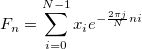
Originは、FFTWライブラリを使ってフーリエ変換を実行します。Originは、変換されたデータを使って、振幅、マグニチュード、パワー密度を計算します。
FFTWでは、変換されたデータの計算は、“codelets”と呼ばれるC言語のコードブロックで構成されるエグゼキュータにより実行されます。各codeletは、変換の一部に指定されています。これらのcodeletsを使って、エグゼキュータはCooley-TurkeyのFFTアルゴリズムを実行し、これの考えは入力信号のサイズをファクタリングするものです。再帰的ファクタリングによって、信号は短く分けられます。短く分けられた変換の結果は乗算され、最終的に元の信号の変換が計算されます。FFTWについての詳細は、http://fftw.org/をご覧下さい。
定義式により、パワー密度とスペクトルは次の式で計算できます。
/math-01ea72bb6484d55067efaf077c138a95.png "P_{xx}(e^{j\omega })=\sum_{m=-\infty }^\infty r_{xx}(m)e^{-j\omega m}")
ここで
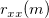
は入力信号の自動相関関数です。しかし、入力信号は有限であり、ある方法がパワースペクトルを推定するのに使えるだけなので、定義式でパワースペクトルを計算することはできません。Originで使われる方法は、Periodogramで、これはフーリエ変換した振幅からパワーを推定するものです。振幅の2乗がパワースペクトルの振幅に比例することは一般的ですが、各ドメインでパワースペクトルの規格化について議論するさまざまな規則が存在します。Originでは、二乗振幅(MSA)、二乗和振幅(SSA)、時間積分2乗振幅 (TISA)の3つを使っています。これらは次のように表されます。
/math-f78ce05254203460fee0e30a9b4cff70.png "Power Density(two-sided)=\begin{cases}\frac{{Re}^2+{Im}^2}{n^2},for MSA\\\frac{{Re}^2+{Im}^2}n,for SSA\\\frac{\Delta t({Re}^2+{Im}^2)}n,for TISA\end{cases}")
ここで
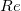
および/math-b51fd3509fe55c0eedb0147d08bdbf8f.png "Im\,\!") は変換データの実数部と虚数部で、
は変換データの実数部と虚数部で、/math-baa52b85c066dbd5eeff3c078a69205b.png "n\,\!") は入力データの長さ、
は入力データの長さ、 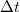
はサンプリング間隔です。パワースペクトルは、スペクトルの種類 (st)で、両側(2)または片側(1)が選択されているかどうかにより、片側または両側にすることができます。片側のパワー密度を計算するには、最初に両側のパワーを計算する必要があります。そして、結果は次の式を使って片側のパワーに変換されます。
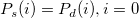
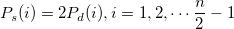
ここで
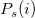
は片側のパワースペクトルで、/math-e075b2b8adb8eba728d28cab34392d45.png "P_d(i)\,\!") は両側のパワースペクトルです。
は両側のパワースペクトルです。
窓関数が適用される場合、パワーの結果は、次式で定義される補償の係数で乗算されます。
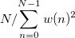
ここで/math-4f1e95fe0a7a8e27f3b50dd3fc160462.png "w(n)") は、下記で定義した窓関数です。
は、下記で定義した窓関数です。 Originは変換したデータのマグニチュード、位相、振幅を計算できます。とを変換したデータの実数部と虚数部にし、を入力信号のサイズにします。を使って、サンプリング間隔を表します。norma 変数を0にセットします。(正規化を使用しない)その他の出力は、以下の式で計算されます。
| スペクトルの種類 両側 (i=1-n/2 ~ n/2) |
スペクトルの種類 片側 (i=0 ~ n/2) | |
|---|---|---|
|
位相 |
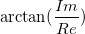 | |
|
マグニチュード |
| |
| 振幅 |
|
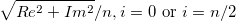 /math-59b53c2648a667df20f43a3773b28534.png "2*\sqrt{Re^2+Im^2}/n, \mbox{ otherwise }\,")
|
|
dB |
| |
|
dB単位で正規化された振幅 |
| |
|
RMS振幅 |
| |
上記の計算は、実際には、norma 変数がfalseにセットされているという前提に基づいています。この変数がtrueにセットされていると、複素数、実数、虚数、マグニチュード、二乗マグニチュードが正規化されます。位相、パワー、振幅、正規化した振幅、dB、二乗振幅は、norma 変数の影響を受けません。
スペクトルの種類(st)で、両側 (2)が選択されていて、正規化 (norma)がTrueにセットされている場合、複素数、実数、虚数、マグニチュード、二乗マグニチュードの結果は、 /math-a957404c96e59f1746f97ab668c8e1f8.png "n\,") で除算されます。ここで、 は入力信号の大きさです。
で除算されます。ここで、 は入力信号の大きさです。
スペクトルの種類(st)で、片側 (1)が選択されていて、正規化 (norma)がTrueにセットされている場合、複素数、実数、虚数、マグニチュード、二乗マグニチュードの結果は、次のように正規化されます。/math-4d30e4daa217409c00a4232ebdb923a1.png "res_s'\,") を正規化した結果にします。
を正規化した結果にします。
/math-a5652bda282e618ec59b68074eb5790f.png "res_s'(i) =
\begin{cases}
res_s(i)/n, & \mbox{if } i=0 \\
2*res_s(i)/n, & \mbox{otherwise}
\end{cases}")
自動的に計算されるサンプリング間隔は、時間データの増加の平均で、これは通常入力信号と結びついているXデータが使われます。結びついているX列が無ければ、行番号が使われます。Originが増加の平均を取得するのに失敗した場合、サンプリング間隔は1にセットされます。
周波数
周波数の列は、サンプリング間隔および、入力データポイント Nの数から取得されます。n番目の周波数データは次式で与えられます。
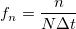
N個の入力データポイントがある場合、周波数領域も最大周波数 でN個のポイントを持ちます。最大周波数
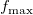
は/math-f10972036c4bdf0172f82cbdec5fdf32.png "\frac 1{\Delta t}(1-\frac 1N)") です。結果の移動オプションが選択されていない場合、変換は0からの間で表示されます。そうでない場合、移動した結果は
です。結果の移動オプションが選択されていない場合、変換は0からの間で表示されます。そうでない場合、移動した結果は /math-da28b5b651977378ea2afdc6646eabbc.png "-\frac{f_{\max }}2") から
から/math-e8556cbd67b2e41e95b7cbc74d5fdd96.png "\frac{f_{\max }}2") の間で表示されます。
の間で表示されます。
ウィンドウ法は漏れを抑えるのに使用します。Originで利用できる異なるウィンドウの種類が次のように定義されます。
/Mini_bulb.png) | 以下の式で、 |
矩形ウィンドウ：
![w[n]=1\,\!](../images/Algorithm_(FFT1)/math-0ea6c517a0282283a8ebbdd2525f1713.png "w[n]=1\,\!")
Welchウィンドウ：
![w[n]=1-\left( \frac{n-\frac 12(N-1)}{\frac 12(N+1)}\right) ^2](../images/Algorithm_(FFT1)/math-36c370ad4c40cff081352cd6c147f4bf.png "w[n]=1-\left( \frac{n-\frac 12(N-1)}{\frac 12(N+1)}\right) ^2")
Triangularウィンドウ：
奇数: /math-0301923ac9ba030df614e6d597b61aca.png "w(n)=\frac 2{N+1}(\frac {N+1}2-|n+1-\frac {N+1}2|)")
偶数: /math-8e83f30fc0b782e1d8b13c070ff8819d.png "w(n)=\frac 2N(\frac N2-|n+1-\frac {N+1}2|)")
Bartlettウィンドウ：
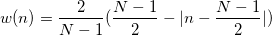
Hanningウィンドウ：
![w[n]=\frac 12[1-\cos (\frac{2\pi n}{N-1})]](../images/Algorithm_(FFT1)/math-8f823e6c7622542b06faa1579d56e96a.png "w[n]=\frac 12[1-\cos (\frac{2\pi n}{N-1})]")
Hammingウィンドウ：
![w[n]=0.54-0.46\cos (\frac{2\pi n}{N-1})](../images/Algorithm_(FFT1)/math-a6fd9500215ae9924cd381d672708a6d.png "w[n]=0.54-0.46\cos (\frac{2\pi n}{N-1})")
Blackmanウィンドウ：
![w[n]=0.42-0.5\cos (\frac{2\pi n}{N-1})+0.08\cos (\frac{4\pi n}{N-1})](../images/Algorithm_(FFT1)/math-d1c1de031af458564cd1fdf389d5fa25.png "w[n]=0.42-0.5\cos (\frac{2\pi n}{N-1})+0.08\cos (\frac{4\pi n}{N-1})")
Gaussianウィンドウ：
![w[n]=exp(-0.5(Alpha( \frac{2n}{N-1}-1 ))^2) \,\!](../images/Algorithm_(FFT1)/math-fab7a042f67f1dfb6dc5556e228508ec.png "w[n]=exp(-0.5(Alpha( \frac{2n}{N-1}-1 ))^2) \,\!")
Kaiserウィンドウ：
![w[n]=I(beta*\sqrt{1-(\frac{2n}{N-1}-1)^2}) / I(beta) \,\!](../images/Algorithm_(FFT1)/math-04b7bbeb549a0b1d5ee22e3d50305676.png "w[n]=I(beta*\sqrt{1-(\frac{2n}{N-1}-1)^2}) / I(beta) \,\!")
/math-c1ece0acf285e8b40cf88b80e8282cfa.png "\sqrt{Re^2+Im^2}\,")
/math-492e800da9c3c4b1292f0a0bea063f0d.png "\sqrt{Re^2+Im^2}/n\,")
/math-ea3686f5a52c473b0e14137f2542b7aa.png "20log(Amplitude)\,")
/math-0496b25eab060be3595e4ca0bca32c71.png "dB-max(dB)\,")
/math-01979a16e7b68ffff4f1b0b1456829ea.png "\frac{\sqrt{2}}2Amplitude\,")
/math-7b8b965ad4bca0e41ab51de7b31363a1.png "n") はデータのインデックス、
はデータのインデックス、/math-8d9c307cb7f3c4a32822a51922d1ceaa.png "N") はデータセットの総数です。
はデータセットの総数です。